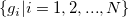
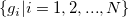
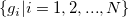
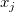
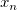
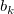
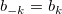
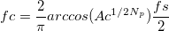
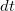

/math-e1e6230760a8fc9ebc5517bbe56756ea.png "\left\{f_i| i = 1,2,...,N\right\}") は入力データポイント、 は出力データポイントを表します。各
は入力データポイント、 は出力データポイントを表します。各/math-91d8947f9447751708c1f4107beb7ab3.png "g_i") は
は/math-2d0012d8e86e7519e3d6bcbcc68b10db.png "\left\{f_m|i - floor(npts/2) < m < i + floor(npts/2)\right\}") から計算されます。
から計算されます。
スムージング法が移動平均、Savitzky-Golay、パーセンタイルフィルタの場合、各スムージングポイントは、移動ウィンドウ内データポイントで計算されます。 は入力データポイント、 は出力データポイントを表します。各はから計算されます。
ここでnptsは、変数のウィンドウのポイント数です。
しかし、スムージング法がFFTフィルタの場合、移動ウィンドウは使われません。代わりに、信号全体が処理されます。
隣接平均法は、簡単な平均計算を行います。各は移動ウィンドウ内のデータポイントの平均です。重み付け平均オプションにチェックが付いている場合、平均は加重平均を使って計算されます。この場合、パラボリック加重が使われ、重みの領域は1に正規化されます。中心が i にあるようなウィンドウ(つまり、i 番目の平均点を計算します)に対して、 j 番目のポイント(j=0, 1, …, npts-1) に対応する重みは次のようになります。
/math-fd200c5c25b7b7843b83b864f39daef2.png "w_j=1-(\frac{(j-i)}{(N+1)/2})^2")
ここでNは、ウィンドウのポイント数です。
Savitzky-Golay法によるフィルタリングは、移動ウィンドウ内のデータポイントに多項式回帰を実行します。そしては、i の位置で多項式の値として計算します。
パーセンタイルフィルタに対しては、移動ウィンドウ内のデータポイントのp番目の四分位がとして割り当てられます。 p は、 パーセンタイルパラメータで指定されます。 p番目の四分位(または100 p番目のパーセンタイル)は、平均を持つ経験分布関数から計算されます。
のようにします。
ここで j は、 /math-a0c7f13b2f9f06d3210a4130a92e4caa.png "npts\cdot p/100") の整数部であり、 g は の小数部分です。
の整数部であり、 g は の小数部分です。
そして、p番目の四分位を計算でき、これは次式のようにyで表されます。
/math-4aee7d1b3d1dbd0413eea75e0db28d4f.png "y=
\begin{cases}
x_j, & \mbox{if }g=0 \\
x_{j+1}, & \mbox{if }g>0
\end{cases}")
ここで、は、移動ウィンドウの j(j=0, 1, ...npts-1)番目のポイント
FFTフィルタ法が選択されていると、Originは次のように実行します。
/math-8a6ec61a846152b8540507019900a780.png "f_{cutoff} = \frac {1}{2n\Delta t}")
|
Note:
|
Lowess と Loess は"locally weighted scatterplot smoothing" （局所加重散布図スムージング）と"locally weighted least squares"（局所加重最小二乗）の略語です。ここで「局所」と使うのは、ある範囲内でを隣り合ったポイントを元に各スムージング値を計算するためです。この方法は一般的に次の手順で実行されます。
/math-1ba8aaab47179b3d3e24b0ccea9f4e30.png "x_i") の重みを計算します。次に立方体積比重関数で、その範囲内にある隣り合ったポイント全ての重みを計算します。
に関連した範囲内の隣り合ったポイントを、
の重みを計算します。次に立方体積比重関数で、その範囲内にある隣り合ったポイント全ての重みを計算します。
に関連した範囲内の隣り合ったポイントを、/math-d247f594c78d0d2be10fc6d82512cc4e.png "d_i") はその範囲内のから最も距離がある隣り合ったポイントの横座標距離を表わします。
はその範囲内のから最も距離がある隣り合ったポイントの横座標距離を表わします。
/math-aeb3b53d344586a9c3e0ec0829777ae7.png "(x_i,\hat{y}_i)") から、を導きます。
から、を導きます。
2項フィルタは重み付け隣接平均フィルタで、  が入力ソースデータ、/math-83c66063e0d9b8864bd422ee8386d59f.png "{y_n}") がスムージング出力データです。
がスムージング出力データです。
/math-ceebc9dfaa7e3ac79481ea2adf795b92.png "y_n=\sum_{k=-N_p}^{Np}b_kx_{n-k}")
スムージング係数の順番は下記のように与えられます。
/math-da59a8657b40db814c19a032fb1f0f9b.png "b_k=\begin{pmatrix} 2N_p\\ N_p+k \end{pmatrix}/4^{N_p}\; \; (k=0,1,...N_p)")
および、

/math-766b775dcac93fa1cf6f6b365212665f.png "N_p") は、次数です。
は、次数です。
カットオフ周波数/math-e05fe30750d3ea262a610d17ebc07019.png "fc") は次式で計算されます。
は次式で計算されます。

/math-54c355936eabc80c15d1dcbc2e697d0d.png "fs=\frac{1}{dt}")
はサンプリング間隔です。は、-6dBのカットオフ振幅で/math-57caf3aa6efe351c51c785be280b5c0d.png "Ac=0.5") です。次数が増加すると、カットオフ周波数は減少します。
です。次数が増加すると、カットオフ周波数は減少します。